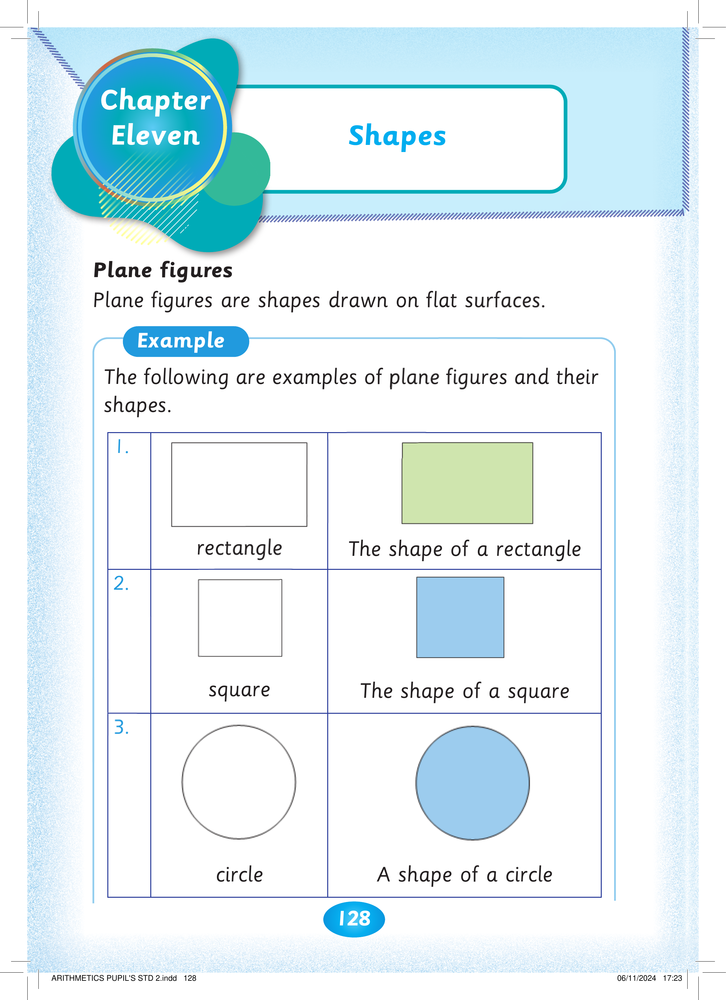
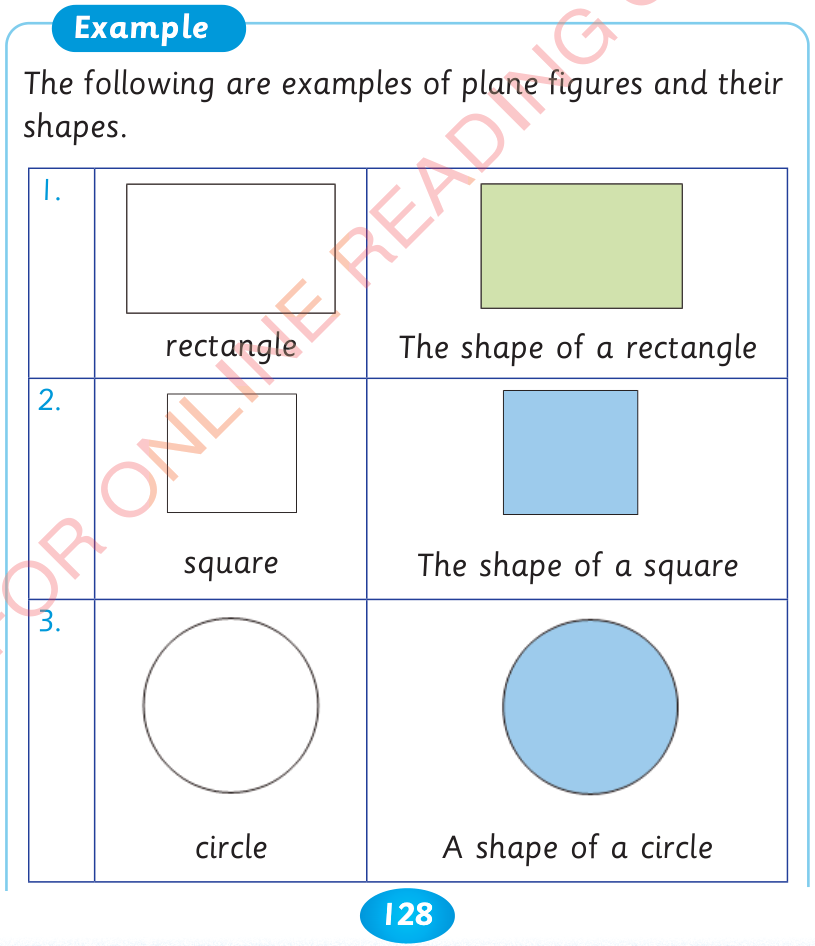
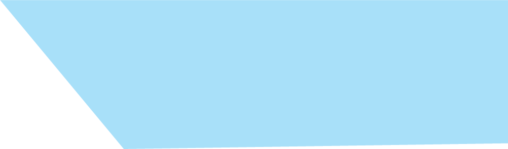
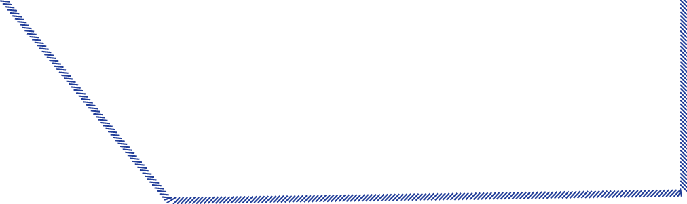
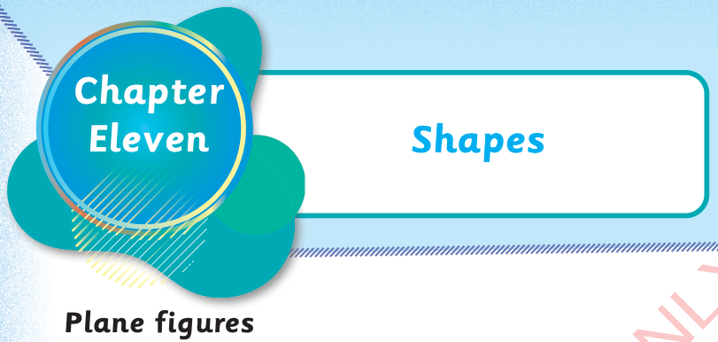

128

Chapter Eleven. Shapes. Plane figures. Plane figures are shapes drawn on flat surfaces. Example. The following are examples of plane figures and their shapes. 1. A rectangle and the shape of a rectangle. 2. A square and the shape of a square. 3. A circle and the shape of a circle.
Plane figures are shapes drawn on flat surfaces.
Example
The following are examples of plane figures and their shapes.
1.
rectangle
The shape of a rectangle
2.
square
The shape of a square
3.
circle
A shape of a circle



Shapes


Chapter
Eleven


ARITHMETICS PUPIL'S STD 2.indd 128
06/11/2024 17:23